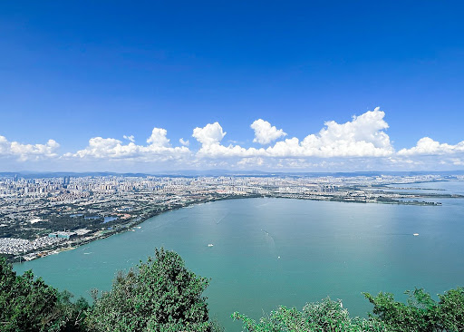

Top 3 Nature Spots in Kunming
Dianchi Lake (Lake Dian)

Introduction
Dianchi Lake, 15 kilometers southwest of downtown Kunming, is Yunnan’s largest freshwater lake (330 square kilometers)—often called “the Pearl of the Plateau.” Surrounded by green hills and wetlands, it’s a haven for nature lovers. The highlight is the Haigeng Dam area (eastern shore), where thousands of red-billed seagulls migrate from Siberia every winter (November–February)—you can feed them breadcrumbs and take photos as they fly around. Other popular spots include Dianchi Wetland Park (with boardwalks through reeds and lotus ponds) and Xishan Scenic Area (western shore, offering lake views from mountain peaks). You can cycle along the lake’s eastern coast (bike rental: 30 CNY/hour) or take a boat tour (1-hour) to enjoy the calm water and mountain backdrops.
Best Time to Visit
Winter (November–February): Seagull migration; mild weather (10°C–18°C) with clear skies.
Morning (9:00 AM–11:00 AM): Seagulls are most active; soft light for lake photos.
Price
Entry Fee: Free (most lake areas, including Haigeng Dam); Dianchi Wetland Park: 20 CNY/adult.
Boat Tour (1-hour): 80 CNY/adult; 40 CNY/children (1.2m–1.4m).
Bike Rental: 30 CNY/hour; 80 CNY/day (includes a lock and map).
Stone Forest (Shilin Scenic Area)

Introduction
Stone Forest, 85 kilometers southeast of Kunming, is a UNESCO World Heritage Site and one of Yunnan’s most iconic natural attractions. Covering 350 square kilometers, it’s a surreal landscape of limestone pillars (up to 40 meters tall) shaped by millions of years of erosion—resembling a forest of stone trees. The main area, Greater Stone Forest, has well-paved trails winding through the pillars, with scenic spots like “Ashima Stone” (a tall pillar named after a Yi ethnic minority legend) and “Sword Peak Pond” (a small lake reflecting the pillars). Lesser Stone Forest (closer to the entrance) is quieter, with fewer crowds and gentle paths suitable for families. You can take a shuttle bus (25 CNY/adult) between the two areas or hire a local guide to learn about the Yi people’s stories tied to the landscape.
Best Time to Visit
Spring (March–May): Cool (15°C–22°C), with wildflowers blooming around the pillars.
Afternoon (2:00 PM–4:00 PM): Golden light reduces harsh shadows on the stone pillars, making photos more vivid.
Price
Entry Fee: 130 CNY/adult; 65 CNY/students (with ID); free for kids under 1.2m.
Internal Shuttle Bus: 25 CNY/adult (unlimited rides between Greater and Lesser Stone Forest).
Yi Ethnic Performance: 50 CNY/adult (30-minute show with singing and dancing, near the entrance).
Western Hills (Xishan Scenic Area)

Introduction
Western Hills, 15 kilometers west of Kunming, are a range of green mountains overlooking Dianchi Lake—known for their pine forests, cliffside pavilions, and panoramic views. The main trail leads to Longmen Grottoes (a series of stone caves and carvings built in the Qing Dynasty), where you can walk along narrow cliff paths and look down at Dianchi Lake below. Other highlights include Huating Temple (a 1,000-year-old Buddhist temple with ancient cypresses) and Taihua Mountain (the highest peak, 2,501 meters, with views of Kunming’s skyline). You can hike the entire trail (3–4 hours) or take a cable car (50 CNY/one-way) from the foot of the mountain to Longmen Grottoes—saving energy for exploring the caves. In spring, azaleas bloom along the trails, adding color to the green mountains.
Best Time to Visit
Spring (March–April): Azalea blooming season; mild temperatures (15°C–20°C).
Sunset (5:30 PM–6:30 PM): Views of Dianchi Lake and Kunming’s skyline at sunset are breathtaking.
Price
Entry Fee: 40 CNY/adult; 20 CNY/students; free for kids under 1.2m.
Cable Car (One-way): 50 CNY/adult; 25 CNY/children (1.2m–1.4m).
Longmen Grottoes Extra Fee: 25 CNY/adult (includes access to the cliffside caves and pavilions).